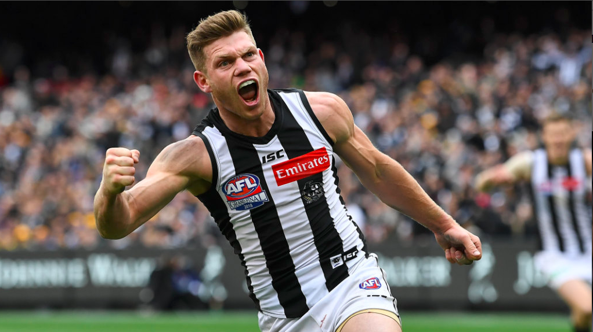
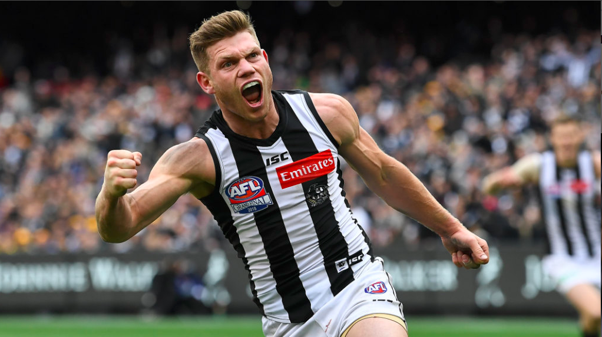

THE SWOOP
A Collingwood FC Community

Access Latest Collingwood FC News Articles from all over web


TV Interviews, Highlights & More
Round 6: Magpies v Bombers Highlights
Round 6: Buckley & Pendlebury Post-Match
Round 6: Buckley Post Game Speech
Round 5: Magpies v Lions Highlights
Round 4: Magpies v Bulldogs Highlights
Hear Radio Interviews with coaches and players, as well as dedicted Podcasts
 Why Essendon and Collingwood have elevated ANZAC Day according to Paul Roos
3AW
Why Essendon and Collingwood have elevated ANZAC Day according to Paul Roos
3AW
 Post Game Jordan De Goey
3AW
Post Game Jordan De Goey
3AW
 Scott Pendlebury Acceptance Speech and Nathan Buckley Defending his Captain
3AW
Scott Pendlebury Acceptance Speech and Nathan Buckley Defending his Captain
3AW
 King and Whately Rank the Top Four Seeds in the AFL Right Now
SEN

The big talking points from Round 6: Anzac Day decisions ticked off, Cats underline flag credentials and more
SEN
King and Whately Rank the Top Four Seeds in the AFL Right Now
SEN

The big talking points from Round 6: Anzac Day decisions ticked off, Cats underline flag credentials and more
SEN